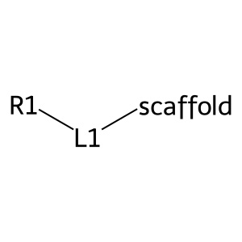
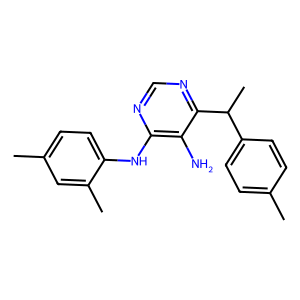

from chem_templates.chem import Molecule
from chem_templates.fragments import shred_smiles
from chem_templates.assembly import AssemblyInputs, FragmentNode, FragmentLeafNode
from chem_templates.filter import RangeFunctionFilter, ValidityFilter, SingleCompoundFilter, Template
from rdkit.Chem import rdMolDescriptors, Descriptors
from rdkit.Chem import DrawFragment Tutorial
How to assemble fragments with templates
This tutorial shows how to use chem_templates fragment assembly to build highly targeted molecular libraries.
We can use a Template to define a series of pass/fail criteria for a single molecule, giving us control over chemical space. But what if we want more fine-grained control over the structure? What if we want molecules that conform to the pattern [R1]-[linker]-[scaffold], with a specific Template for each of those sections?
This is challenging from a top-down approach because it requires figuring out how to map arbitrary molecules to the [R1]-[linker]-[scaffold], which involves a dizzying amount of SMARTS definitions. A much easier way is to assemble molecules from the bottom up, ensuring that each fragment in the assembly matches the desired chemotype.
We can accomplish this with the following steps: 1. define templates 2. define assembly schema 3. create fragment library 4. assemble molecules
Defining Templates
First we need to define templates for our assembly schema. We want molecules to conform to [R1]-[linker]-[scaffold]. We will define separate templates for R1, linker, scaffold and the full assembled molecule:
R1 template: * 1 ring * no rotatable bonds
Linker template: * no rings * at most 4 rotatable bonds * at most 60 g/mol
Scaffold template: * 2 rings * at most 250 g/mol
Full molecule template: * Valid compound * Single compound * <= 8 rotatable bonds * <=5 hydrogen bond donors * <=10 hydrogen bond acceptors * <= 500 g/mol * <= 5 ClogP
def rings(molecule):
return rdMolDescriptors.CalcNumRings(molecule.mol)
def hbd(molecule):
return rdMolDescriptors.CalcNumHBD(molecule.mol)
def hba(molecule):
return rdMolDescriptors.CalcNumHBA(molecule.mol)
def molwt(molecule):
return rdMolDescriptors.CalcExactMolWt(molecule.mol)
def logp(molecule):
return Descriptors.MolLogP(molecule.mol)
def rotb(molecule):
return rdMolDescriptors.CalcNumRotatableBonds(molecule.mol)r1_template = Template([
RangeFunctionFilter(rings, 'rings', 1, 1),
RangeFunctionFilter(rotb, 'rotatable_bonds', 0, 0)
])
linker_template = Template([
RangeFunctionFilter(rings, 'rings', 0, 0),
RangeFunctionFilter(rotb, 'rotatable_bonds', None, 4),
RangeFunctionFilter(molwt, 'mol_wt', None, 60)
])
scaffold_template = Template([
RangeFunctionFilter(rings, 'rings', 2, 2),
RangeFunctionFilter(molwt, 'mol_wt', None, 250)
])
full_template = Template([
ValidityFilter(),
SingleCompoundFilter(),
RangeFunctionFilter(rotb, 'rotatable_bonds', None, 8),
RangeFunctionFilter(hbd, 'hydrogen_bond_donors', None, 5),
RangeFunctionFilter(hba, 'hydrogen_bond_acceptors', None, 10),
RangeFunctionFilter(molwt, 'mol_wt', None, 500),
RangeFunctionFilter(logp, 'clogp', None, 5)
])Define Assembly Schema
Now we define how the fragments will fit together. First we define our leaf nodes with the FragmentLeafNode class. Each leaf node is given a name, a set of mapping_idxs, and a template.
The mapping_idxs define how fragments are mapped and assembled. Mappings are implemented as an annotation on dummy atoms, ie [*:1]C would be a carbon atom with a single mapping with 1 as the mapping index.
For this schema, we will use the following mappings: * R1 - [1] * Linker - [1,2] * Scaffold - [2]
This tells us that all R1 fragments should have a single mapping with 1 as the index - ie [*:1][R1].
Linker fragments should have two mappings with 1 and 2 as the index values - ie [*:1][linker][*:2]
Scaffold fragments should have one mapping with 2 as the index - ie [*:2][scaffold]
These will be assembled as [R1]-[*:1]-[linker]-[*:2]-[scaffold] -> [R1]-[linker]-[scaffold]
R1 = FragmentLeafNode('R1', [1], template=r1_template)
linker = FragmentLeafNode('L1', [1, 2], template=linker_template)
scaffold = FragmentLeafNode('scaffold', [2], template=scaffold_template)Now we need to define how to assemble these fragments. We can do this with the FragmentNode class:
full_molecule = FragmentNode('full_molecule', [scaffold, R1, linker], template=full_template)This will fuse our three leaf nodes into a single molecule. We can validate our assembly by checking the dummy_mol object of the full molecule node:
Draw.MolToImage(full_molecule.dummy)
We used the most simple assembly:
full_molecule = FragmentNode('full_molecule', [scaffold, R1, linker], template=full_template)This grabs our three leaf nodes and assembles them all at once.
If we wanted, we could use more intermediate nodes to give more control. Say we wanted to add another template check on [R1]-[linker], we could do that with another intermediate node:
r1_linker_fused = FragmentNode('r1_linker_fused', [R1, linker], template=r1_fused_template)
full_molecule = FragmentNode('full_molecule', [scaffold, r1_linker_fused], template=full_template)Or we could have an intermediate node for [linker]-[scaffold]:
linker_scaffold_fused = FragmentNode('linker_scaffold_fused', [scaffold, linker], template=linker_scaffold_fused_template)
full_molecule = FragmentNode('full_molecule', [linker_scaffold_fused, R1], template=full_template)In practice, you should add an intermediate node whenever you think another template would be useful
Create Fragment Library
Now we need some fragments. To make things easy, we’ll take a set list of SMILES and shred them to create fragments
smiles = ['CNc1nc(SCC(=O)Nc2cc(Cl)ccc2OC)nc2ccccc12',
'COc1ccc(C(=O)Oc2ccc(/C=C3\\C(=N)N4OC(C)=CC4=NC3=O)cc2OC)cc1',
'Cc1sc(NC(=O)c2ccccc2)c(C(N)=O)c1C',
'COc1ccc(NCc2noc(-c3ccoc3)n2)cc1OC(F)F',
'O=C(COC(=O)c1cccc(Br)c1)c1ccc2c(c1)OCCCO2',
'CCOC(=O)c1nc2ccccc2nc1N1CCN(c2ccc(OC)cc2)CC1',
'CC(=O)c1cc2c(N)c(C(=O)Nc3cccc4nsnc34)sc2nc1C',
'O=C(NCCc1csc(-c2ccccc2)n1)Nc1ccc2[nH]ccc2c1',
'CC(=O)c1ccc(NC(=O)Cn2c(=O)n(-c3ccc(F)cc3)c(=O)c3oc4ccccc4c32)cc1',
'O=C(NCCC[NH+]1Cc2ccccc2C1)c1cccc(Cn2cccn2)c1',
'O=C1CC(C(=O)Nc2ccc3c(c2)OCCO3)=c2ccccc2=[NH+]1',
'O=C(CSCc1ccc(F)cc1Cl)Nn1c(=S)[nH]c2sc3c(c2c1=O)CCC3',
'CN(CCS(C)(=O)=O)CC(=O)c1ccc2c(c1)CCC2',
'Cc1nn2ccccc2c1C(=O)N1CCN(C(=O)NC(C)C)CC1',
'CCN(CCO)c1ncnc(Nc2ccc(C)cc2C)c1N',
'O=C(COc1ccc(Cl)cc1Cl)Nc1ccc(S(=O)(=O)N2CCOCC2)cc1',
'COc1ccc(-c2ccc(=O)n(CCCC(=O)NC3CCCC3)n2)cc1',
'CCOc1cc(NC(=O)c2cccnc2Cl)ccc1OC',
'CCc1nn(C)cc1CNC(=O)CNC(=O)c1cccc([N+](=O)[O-])c1',
'Cc1ccc(CNC(=O)c2ccccc2NC(=O)c2ccc(NC(=O)C(C)C)cc2)cc1']frags = shred_smiles(smiles, [1,2,3], 25, 4, False)
len(frags)0 20
1 368
2 45
3 8437Assemble Molecules
Now we do the assembly itself. First we run full_molecule.build_assembly_pools. This gives us a dictionary of AssemblyPool objects holding fragments that match the template for each leaf node.
Then we create our AssemblyInputs and pass them to full_molecule.assemble. The result is a pool of molecules that all conform to our [R1]-[linker]-[scaffold] chemotype and match each template we created above
frag_molecules = [Molecule(i) for i in frags]assembly_dict = full_molecule.build_assembly_pools(frag_molecules)
assembly_dict{'L1': AssemblyPool: 41 items,
'R1': AssemblyPool: 11 items,
'scaffold': AssemblyPool: 33 items}assembly_inputs = AssemblyInputs(assembly_dict, 1000, 5000)assembled = full_molecule.assemble(assembly_inputs)
assembledscaffold
R1
L1
full_moleculeAssemblyPool: 5659 itemsDraw.MolToImage(assembled[0].mol)